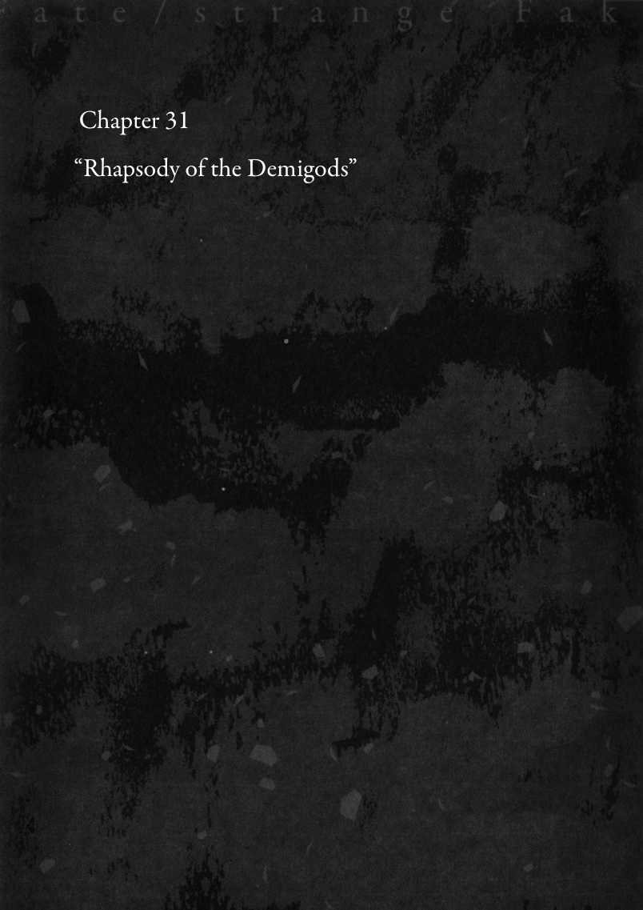

Oeste de Snowfield
Tudo era branco. Completamente branco.
Todo aquele espaço estava iluminado por relâmpagos. O silêncio persistiu por um tempo, como se o tempo houvesse parado. Era até possível que ele realmente não fluísse ali. Alcides notou uma única sombra contrastando com o branco puro ao seu redor. A figura tinha o dobro de seu tamanho e, embora fosse uma sombra, brilhava mais e mais branca do que a própria brancura que a cercava.
Apesar de transparente, a gigantesca sombra branca possuía uma presença tão avassaladora que quase fazia Alcides acreditar que ela era o verdadeiro centro daquele mundo. Alcides reconheceu nela vestígios de si mesmo e falou.
"Saia da minha vista."
"..."
A sombra branca não respondeu e não se moveu.
"Ouça bem, meu futuro em que tomei para mim o nome da glória do deus que odeio e me transformei em cão de colo de um punhado de sucata naquela cidade montanhosa."
Alcides confrontou a sombra - a cópia do herói lendário - e atiçou dentro de si os relâmpagos rubro-negros.
Dentro do tempo paralisado, o brilho dos relâmpagos se inverte. A lama ultrapassa os raios. O mundo ao redor deles é tingido de rubro-negro. Aos poucos, a cor escurece, domina e profana tudo.
"Você também encontrará o seu fim diante da minha vingança... Na verdade, será o último sangue derramado. Sempre assumi que você havia sido reduzido a cinzas no instante em que obtive esta Origem Espiritual, mas vejo que escolheu bloquear meu caminho neste ponto."
Alcides queria deixar suas intenções claras. Aquele seria o lugar onde os deuses encontrariam seu fim. Aquele era um ato de vingança contra os deuses. Para transmitir isso, a lama rubro-negra corroía pouco a pouco o mundo vivo de relâmpagos em que Alcides estava se transformando.
Mas - a silhueta diante dele não brilhava nem um pouco menos.
As centenas, milhares, dezenas de milhares de mãos de lama que o enredavam não lhe arrancavam o fulgor.
O fato de tudo, exceto ele próprio, estar sendo repintado por energia rubro-negra não lhe arrancava o fulgor.
A radiância humanoide jamais deixava aquele mundo.
"..."
Não era possível ver a expressão no rosto da sombra resplandecente. Mas Alcides conseguia senti-la. A silhueta estava sorrindo para ele.
"Mesmo agora, você ousa menosprezar quem eu sou... Menosprezar os humanos?"
O espaço se encheu de uma raiva silenciosa, e o vingador estendeu a mão em direção à sombra mais brilhante que a luz.
Uma torrente avassaladora de Energia Mágica se agitou, tentando perfurá-la, estraçalhá-la e esmagá-la.
"..."
Em meio a tudo aquilo, a forma branca ainda não desaparecia. Ela abriu a boca calmamente. Mais exatamente, Alcides apenas teve a impressão de que ela abrira a boca, porque, na realidade, a silhueta manteve o mesmo sorriso enquanto falava.
Você não consegue.
Uma voz sem som. Ainda assim, Alcides certamente podia sentir a vontade da "sombra".
Há uma coisa que você não pode negar, por mais que tente descartar todo o passado. Mesmo que apague cada registro do seu nome e da sua aparência dos arquivos do planeta e da memória da humanidade, isto seguirá irrefutável: ■■■■■■■■■■■■■■■■■■■■■■■■■■■■■■■■■■■■■■■■.
No instante em que essa frase foi pronunciada - o mundo branco se despedaçou.
Por isso, Alcides não pôde aceitar nem contestar as palavras da sombra. Sem qualquer resposta - e sem precisar de uma -, Alcides continuou avançando com firmeza rumo à própria vingança. Sua vingança era justa ou não? Ele sabia que, desde que fora regravado pelo planeta como um vingador, jamais precisaria de uma resposta. O fato de seus caminhos terem sido torcidos pela intenção de alguém não importava ali.
Os trovões voltaram a correr no tempo, e seus rugidos embaralharam a fronteira entre o real e o fantástico.
Alcides flutuava no centro do gigantesco cumulonimbus. Seu olhar já não estava voltado para dentro e, dali em diante, a sombra interior nunca mais tomaria seus pensamentos. Toda a sua atenção se voltou apenas para a inimiga que avançava sorrateira por entre os raios celestes.
Aproximar-se dele já era um feito por si só. Alcides sabia disso. O que antes eram os relâmpagos de Gugalanna agora podia ser descrito ao mesmo tempo como um pequeno furacão e um supertornado comprimido ao máximo sem perder a divindade marcante de Gugalanna. Seu sistema engolia automaticamente qualquer coisa que se aproximasse num lampejo elétrico, pulverizando-a e somando seus restos à poeira do redemoinho.
Nem mesmo Espíritos Heroicos sairiam ilesos dos raios dos deuses. Ele acreditava que a pequena sombra que se aproximava logo se tornaria um punhado de pó vagando pelas rajadas.
Mas veja só...
A presença que se aproximava ignorava os raios do juízo e continuava avançando.
"Então era você..."
Dez milhões de lanças de relâmpago que tudo perfuram haviam se reunido para formar aquela tempestade opressiva. E uma presença poderosa atravessava a tormenta para se aproximar.
"Guerreira e rainha."
As palavras lhe vieram naturalmente. Mas já não estava claro se a vontade de Alcides ainda tinha alguma participação ali. Os instintos remanescentes e as experiências de vida gravadas em seu corpo estavam falando em seu lugar. Os efeitos da "lama" e do veneno da Hidra correndo por seu corpo já deveriam tê-lo privado da sanidade há muito tempo.
Ainda assim, ele retinha por pouco a razão. Seria essa a prova da força mental extraordinária de Alcides? Ou seriam os Selos de Comando que o distorciam? Ele não sabia a resposta.
Carregava uma única missão. Para executar sua vingança contra os deuses, apagaria sua própria glória com o poder do Santo Graal.
O nome que Alcides tanto abominava era conhecido demais para que o ato, de resto simples, de apagar os rastros deixados por um único indivíduo bastasse.
Esse trabalho exigia desferir um golpe letal no mundo; e, se fosse preciso, que assim fosse. Mesmo antes de ser envenenado pelo veneno mortal da Hidra, quando seus pensamentos ainda estavam em ordem, Alcides já estava preparado para essas consequências.
Portanto... ela podia ser considerada um modesto contrapeso da Ordem Humana contra ele. Em seu estado atual, tinha poder suficiente para fazer com que essa avaliação não soasse delirante.
O "ela" em questão era - a valente dama manipulada pelos planos de Hera e derrotada pelo herói lendário. Filha de Ares e sacerdotisa de Ártemis. A orgulhosa primogênita das três irmãs amazonas.
Servo, Rider.
A chefe guerreira Hippolyte.
Sua investida era tão feroz quanto bela. Uma única cavaleira no ataque. Montada no corcel precioso ligado à sua Origem Espiritual, ela cruzava o campo de batalha sozinha.
Seu oponente também era um único Servo, mas ele havia se transformado em algo tão resistente quanto um exército e ainda estava em processo de se tornar tão resistente quanto uma nação.
O cume de trovão fora entronizado naquela terra devastada que antes era uma floresta. Um Espírito Heroico forçara uma besta divina à submissão e roubara seu status. As tropas de relâmpagos em forma de cumulonimbus espalhavam-se ampla e tridimensionalmente. Cada golpe daquela força elétrica era capaz de destruir um exército desprevenido. Depois de subjugar a encarnação dos vendavais e mobilizar as tropas do trovão, Alcides podia ser descrito como a encarnação do poder que apaga guerreiros aos milhares.
Mas Rider não vacilou. Os linguistas dizem que o nome Hippolyte significa "aquela que solta os cavalos" ou "aquela que livra os cavalos de suas dúvidas".
Naquele exato momento, ela estava libertando o próprio cavalo de seus medos e amarras, concedendo-lhe a verdadeira liberdade.
Em retribuição àquela que libertara seu coração, a montaria disparou em direção à massa de morte sem temer os relâmpagos.
E, agora que o espírito do cavalo e o da cavaleira eram um só, eles se libertaram dos grilhões da gravidade.
Num salto poderoso, golpearam com as patas a terra enlameada e afogada pela inundação causada pelo Fantasma Nobre de Alcides.
Os primeiros relâmpagos caíram indiscriminadamente sobre tudo ao redor. Esquivando-se deles por trajetórias impossíveis para um cavalo comum, a montaria dançava rumo ao céu, usando os rochedos explodidos como plataformas para que Rider pudesse abrir caminho até desafiar a nuvem colossal.
Os ventos sopravam ferozes, acompanhados pelos tambores intensos dos trovões, como se dessem voz ao ódio do Avenger sentado no centro do cume de nuvens tempestuosas.
Rider avançava firme em meio ao trovão. Seus movimentos podiam parecer fáceis vistos de longe, mas isso não passava de ilusão causada pela pura diferença de escala entre ela e a nuvem de tempestade.
Os movimentos da guerreira a cavalo superavam em muito a velocidade de cavalos reais, atravessando o campo de relâmpagos com a rapidez de um projétil de canhão.
Usando a divindade conferida pela faixa que é seu Fantasma Nobre, o cavalo avançava literalmente pisando nos clarões carregados da mesma divindade que envolvia seus cascos.
O Pégaso sem asas já não precisava mais dos rochedos para voar. O chão e as nuvens ao redor de Rider eram iluminados pelos raios cravados neles, e os trovões tentavam romper seus tímpanos.
Mas não havia um traço sequer de medo nos olhos de seu garanhão, Kallion. As nuvens eram pesadas e os clarões confundiam sua visão com uma escuridão branca. Num cenário que lembrava o fim do mundo, Rider continuava proclamando em alta voz que permanecia viva.
Suas roupas estavam encharcadas e pesadas, e seu rosto era açoitado pela chuva, mas seus olhos seguiam cheios de determinação.
E então - no momento em que a mulher voadora atingiu o topo do cumulonimbus, a tempestade se acalmou de forma milagrosa.
No alto da massa giratória de nuvens, havia um enorme buraco onde deveria estar o olho do furacão. Olhando para dentro, ela viu algo que se parecia menos com o interior de um tornado e mais com um redemoinho num mar de nuvens.
Exposta a uma Energia Mágica densa, como se o interior daquele turbilhão houvesse retornado à Era dos Deuses, Rider olhou mais fundo para o redemoinho de eletricidade.
Naquele momento de silêncio, encontrou o coração do cumulonimbus. Viu o distante avenger usar apenas a própria Origem Espiritual para submeter o relâmpago carregado de imensa divindade, sem jamais absorvê-lo.
"Alcides..."
Os relâmpagos voltaram a brilhar, anunciando que a luta havia recomeçado. Rider gritou em meio aos trovões, sem ligar para o fato de que seus clamores engoliriam sua voz. Quando você absorveu os relâmpagos, achei que estivesse tentando brincar de Zeus... mas preciso me desculpar. Vejo agora você subjugando os deuses com a própria força, permanecendo fiel à sua revolta contra eles.
Ela se lembrou do primeiro encontro com Alcides nas terras de Snowfield, quando ele dissera que o poder dos deuses deveria ser controlado por mãos humanas, não habitar dentro dele.
Se o corpo nascido como filho de um deus tivesse abrigado a imensa divindade que compunha aquele touro gigantesco, ele poderia ter se tornado um deus do trovão semelhante a Zeus e apagado o continente.
Mas isso era inaceitável para ele, e por isso escolhera o sofrimento infernal de controlar um poder maior do que o seu enquanto era consumido por veneno.
Sua determinação é genuína. Ela ajustou a própria respiração em silêncio enquanto desfrutava a sensação de flutuar que antecede a queda livre.
Então abriu os dois olhos e se lançou para baixo em uma descida de dez mil metros, numa velocidade muito acima de uma queda natural.
O nome disso era Ataque Descendente de Hiyodorigoe, não? Rider recordou a tática de um dos muitos cavaleiros sobre os quais aprendera nos últimos dias.
Mesmo após se tornar um Espírito Heroico, continuava faminta por aperfeiçoamento como guerreira montada, e tentava transformar o conhecimento concedido pelo Graal em força adicional, incorporando táticas e técnicas de cavalaria de terras e eras diversas.
O Ataque Descendente de Hiyodorigoe foi uma tática de um herói guerreiro chamado Minamoto no Yoshitsune.
Uma história do Japão sobre uma ocasião em que ele fez dois cavalos descerem por um penhasco e, depois que um deles comprovou que era possível chegar ao fim sem ferimentos, lançou um ataque surpresa a cavalo.
Embora achasse gravíssimo que um dos cavalos tenha torcido a perna naquele teste, Rider sorriu com ousadia ao se lembrar das anedotas sobre o combatente destemido que tomou a dianteira e desceu o precipício antes mesmo de Yoshitsune, e sobre o poderoso guerreiro que desceu com as próprias pernas carregando o cavalo porque o considerava mais importante que a si mesmo.
Ah, eu queria ter tido a oportunidade de travar um combate sincero de habilidade marcial contra os lutadores mais duros de terras estrangeiras...
Lembrou-se de ter percorrido uma boa quantidade de territórios e conquistado inúmeros campos de batalha nos tempos em que viveu entre a tribo dos cavaleiros.
Mas esta Guerra do Santo Graal era falsa desde o âmago. Já havia engrenagens demais fora do lugar, e uma cidade inteira estava prestes a ser destruída. Ainda assim, seus intrigantes Mestres lhe disseram para correr conforme desejasse. Um grupo de pessoas diferentes, com sensibilidades diferentes; algumas com a racionalidade típica de um mago, outras movidas por razões mais ilógicas.
Ela percebia que cada um possuía um ego forte e que lhes faltava unidade básica. Mas, estranhamente, pareciam capazes de funcionar como uma única forma de vida apesar disso. Como se, dentro de um corpo, coração, olhos, ossos e ouvidos pudessem ter funções completamente diferentes e ainda assim contar como um só indivíduo.
Talvez fosse assim que eram os aventureiros que navegaram naquela célebre embarcação.
"Os Argonautas...", murmurou Rider, de maneira um tanto desajeitada, dentro da própria mente.
Ah, claro... Em vida ela não sabia nada daquilo, mas agora o conhecimento recebido do Graal e tudo o que os alunos da sala de aula do El-Melloi lhe ensinaram sobre seu inimigo começavam a se encaixar em sua cabeça.
"Se eu pudesse, por um instante, esquecer meu papel de rainha e o mau sangue com certos marinheiros..." Aquele homem era um deles. "...eu teria adorado embarcar naquele navio colossal!"
Com alegria na voz, impulsionou ainda mais a velocidade do cavalo. Transbordando vitalidade, com uma expressão que ninguém acreditaria pertencer ao rosto de alguém correndo para a própria morte.
O interior do redemoinho tinha um nível diferente de pressão do ar e de densidade de Energia Mágica. O fluxo de vento e Energia Mágica era tão intenso que reduziria instantaneamente a pedacinhos um mago medíocre, quanto mais um humano comum.
Entrar naquela torrente de poder e correr pelas paredes do redemoinho de nuvens tempestuosas era muito mais perigoso do que correr por uma parede vertical.
Ainda assim, seu garanhão atravessou a tempestade sem hesitar um único passo. Os ventos desarrumavam o cabelo de Hippolyte e a crina de seu corcel, e muito piores do que a velocidade do vento eram os grãos de granizo transformados em balas. Granizo comum contaria apenas como objeto físico e não causaria dano algum a um Servo. Mas o granizo dali estava revestido de relâmpago divino, transformando-se em pseudo-Fantasmas Nobres capazes de despedaçar Origens Espirituais.
Mesmo assim, o cavalo não parou. Toda a atenção de Rider, montada nele, permanecia concentrada em Alcides nas profundezas do turbilhão, sem nunca cobrir ou desviar os olhos.
Alcides, por sua vez, não dava sinais de atacá-la diretamente, tornando incerto se sequer a havia notado.
"Parece que ele não acha que eu mereça sua atenção."
Rider ajustou calmamente o ritmo da respiração enquanto dançava por entre os vendavais e o granizo. Lembrou-se do primeiro dia de sua invocação - do instante em que encontrou Alcides e o arqueiro dourado naquele desfiladeiro.
Sua mão apertava um arco com força, e a flecha já estava apoiada, aguardando em silêncio o momento certo para perfurar o inimigo.
Esperando enquanto circulava mais rápido que o vento. Uma abordagem contraditória. Como um piloto em combate aéreo, ela determinava o momento ideal de disparar sentindo por todo o corpo a força violenta da gravidade.
Seu corpo - que lhe permitira manter o status de chefe guerreira ainda na Era dos Deuses, quando deuses, monstros, humanos e fadas compartilhavam o mesmo espaço e inúmeros combatentes terríveis percorriam o mundo - mantinha a postura firme por mais violentos que se tornassem os ventos.
Mesmo que ele já não carregasse a mesma essência de antes, ainda assim ela estava prestes a desafiar o maior herói de sua era, e por isso não podia se permitir vacilar nas etapas preliminares.
Ela cavalgou ao longo das paredes do vórtice de trovões, indo aonde o vento e o fluxo de Energia Mágica a levavam.
A amazona resistiu às rajadas tempestuosas enquanto preparava o arco e disparava sem jamais se expor.
A flecha lançada escorregou pelos ventos, perfurou o granizo e avançou entre os trovões.
Metaforicamente, talhando um novo caminho através dos redemoinhos do destino.
Snowfield, distrito central, subterrâneo
"Já começou...?", murmurou Sigma enquanto descia por uma escada metálica, ao perceber a perturbação da Energia Mágica no ar.
Ele era um feiticeiro extremamente competente, mas isso não significava que dominasse os fundamentos da magia.
Ainda assim, a Energia Mágica a oeste estava tão perturbada que até ele a percebia com clareza.
"É, algum choque entre rivais de passado compartilhado... mas isso já não dá mais para chamar de luta entre uma amazona e o maior dos heróis.", respondeu, dando de ombros, a silhueta de um capitão idoso.
"Quer dizer que virou uma batalha para derrubar um deus?"
Sigma voltou a atenção para a luta acima enquanto lembrava do próprio tiro mata-deuses contra Ishtar havia pouco.
"Não... mas também, acho que sim. Os outros talvez discordem, mas do meu ponto de vista não vejo diferença. Bem, quando penso assim fico torcendo por aquela rainha amazona. Não, dá até vontade de pedir para assumir o lugar dela."
"Ok.", respondeu Sigma com indiferença.
Sua resposta fez o garoto com o caduceu assumir e mudar de assunto.
"Tenho minhas próprias questões em relação ao meu velho amigo consumido pela vingança. Se eu não tivesse dedicado tudo de mim à medicina, há uma boa chance de eu ter terminado igual a ele."
"Você viraria um Avenger?"
"Bem, no meu caso, aperfeiçoar a ressurreição já contaria como vingança."
"Parece... produtivo.", comentou Sigma, sem entusiasmo, enquanto descia a escada.
"Eu provavelmente priorizaria tanto a rejeição da morte que, em termos modernos, acabaria enchendo o mundo de zumbis. Isso ficaria bem longe do ápice da medicina que eu almejo.", discordou o garoto do caduceu.
"Se você tem tanta consciência disso agora... acho que não vai acabar assim."
"Quando a vingança te contamina, até mesmo o desejo central que te move pode se torcer... ou melhor, a vingança se torna o novo desejo central."
Com isso, a sombra olhou para cima com uma expressão melancólica. A sombra feita das informações registradas em Watcher falava de alguém a oeste, carregando emoção simulada na voz.
"Talvez o remédio de que ele mais precisava agora fosse ter de volta, ao leme do capitão, o mais humano dos humanos."
"O que quer dizer com isso?", perguntou Sigma.
"As pessoas acham que deuses e bestas são a droga mais difícil de lidar, mas, na verdade, são os humanos.", respondeu a silhueta do menino com um sorriso solitário.
Oeste de Snowfield, interior da nuvem cumulonimbus
Um golpe fatal. Era assim que o primeiro disparo de Rider merecia ser chamado em circunstâncias normais. Em termos de armas modernas, sua flecha seria como uma bomba destruidora de bunkers: um projétil com impacto e poder de perfuração suficientes para atravessar o solo e destruir o inimigo subterrâneo. A flecha avançou em linha reta sobre Alcides, perfurando tudo em seu caminho.
A pele do Leão de Neméia pode bloquear qualquer criação humana, mas nada faz contra o poder dos deuses que flui da cinta de Ares que serve de Fantasma Nobre de Rider, o que significa dano interno inevitável.
Se acertasse em cheio, a balança penderia muito a favor de Rider. Em contrapartida, Alcides não dava sinal algum de querer se esquivar. Também poderia neutralizar o disparo lançando a própria flecha, mas ainda nem havia preparado o arco. Será que ele realmente já não tinha condições de lutar? Eu imaginei isso, já que os efeitos do veneno mortal da Hidra e da "lama" rubro-negra que o invadia devem ser violentos.
Ela cortou esse raciocínio antes que se completasse. Nada de se agarrar a esperanças tolas. Por mais alterado que estivesse, não havia como ela ter facilidade contra o grande herói que a matou.
Começou a apoiar uma segunda flecha, julgando que estava diante de um oponente contra o qual não podia se permitir nenhuma imprudência, ainda que ele se tornasse um cadáver.
Não... seria isso que é imprudência? Os olhos de Rider se encheram de outro tipo de energia, e seus lábios formaram um sorriso ousado sem a menor hesitação.
O homem contra quem eu quero lutar... jamais se perderia aqui. Tenho certeza de que ele vai deter a minha flecha. Eu conheço esse sujeito!
Certa disso, continuou disparando flecha após flecha. As flechas investiram sobre Alcides, dançando com o vento e o trovão. Sua trajetória era fluida como água, e cada ponta carregava divindade, fazendo com que perseguissem o inimigo como se estivessem vivas.
Mas - entre Alcides e a primeira flecha lampejou um relâmpago rubro-negro, abatendo seu ataque feroz.
No entanto, para contornar os golpes do trovão, uma chuva enfurecida de flechas formou outra tempestade dentro da nuvem do furacão e engoliu Alcides.
"Eu sabia que isso não bastaria para alcançar você...", engoliu em seco, impressionada.
Imediatamente antes de eles se reencontrarem no cânion ao norte, Alcides aparara por completo um verdadeiro redemoinho de ataques do Rei dos Heróis - uma chuva onidirecional de Fantasmas Nobres.
A pele do Leão de Neméia, sozinha, não bastaria para bloquear aquilo tudo. A razão pela qual o maior herói superou todas as dificuldades da vida e realizou tantos feitos não estava no poder dos deuses.
As artes marciais que aprendeu durante sua vida humana se reuniram e floresceram, dando fruto dentro de sua alma. Ele aperfeiçoou uma técnica que se adaptava a qualquer situação, do arco e da espada que usava como padrão a inúmeras outras armas e princípios centrais, incluindo a forma de combater exércitos ou monstros com as próprias mãos.
Essa cristalização de experiência e técnica realmente pertence à sua Origem Espiritual humana.
As artes marciais Nine Lives.
Gravado profundamente em sua Origem Espiritual está o acúmulo da jornada de sua vida, movendo-se por si só sem sequer precisar tomar a forma do Fantasma Nobre.
A pele do leão, sozinha, não o deixaria ileso. As artes marciais, sozinhas, também não o deixariam ileso.
Unidos e recebendo o reforço de quantidades vastas de Energia Mágica e divindade, os dois criavam algo como um exoesqueleto de trovões sobre aquele que se sentava no coração da nuvem tempestuosa: o próprio corpo de Alcides.
Poder marcial esmagador. Feitos heroicos sem igual. Ao mesmo tempo, ela percebeu que a densidade de energia dentro dele continuava aumentando e irritando o seu corpo.
Será que ele está... se misturando? A presença de bestas místicas começou a se embaralhar com as paredes internas da nuvem, turbulentas como um oceano erguido.
Da pele do Leão de Neméia cobrindo a cabeça de Alcides emanava um fedor próprio de bestas místicas, e faíscas em forma de pássaro começaram a atravessar os interstícios entre os relâmpagos.
"Os Estinfálidos...", murmurou Rider ao ver o bando de aves elétricas aumentar em número ao redor de Alcides.
Aquelas aves de bronze figuravam entre os Doze Trabalhos. Sua mãe lhe contara que, originalmente, eram uma tropa de aeronaves companheiras de seu pai, o deus da guerra Ares.
Comparadas à forma como as viu alguns dias antes, estavam ficando visivelmente mais próximas das formas originais.
Agora faz sentido. Eu realmente imaginei que era impossível roubar o Fantasma Nobre de alguém sem nenhum risco ou custo...
Um Fantasma Nobre que rouba um Fantasma Nobre que pode ser considerado a própria Origem Espiritual do oponente.
Ter de fundir partes de seus Fantasmas Nobres e de suas Origens Espirituais deve ser menos um preço desse absurdo e mais um passo necessário para grampear alguma coisa de modo tosco à própria Origem Espiritual. Minha aposta é que, se ele abrisse mão desse furacão colossal que é o poder de Gugalanna, o poder dessas partes fundidas não voltaria para ele.
Mas apenas as circunstâncias que ela imaginava não bastariam para roubar o Fantasma Nobre de outrem.
O que tornava isso possível era a força que a Origem Espiritual do herói lendário ainda possuía mesmo depois de descartar o poder dos deuses, além do imenso suprimento de Energia Mágica fornecido por seu Mestre.
A nuvem furacão vinha adquirindo auras de bestas além de Gugalanna. As inúmeras bestas místicas que enfrentaram o maior dos heróis em vida estavam se misturando, preenchendo o ar com um fedor semelhante ao do caos primordial.
"Seu ódio pelos deuses é tão grande assim que você pretende se transformar no monstro que derrotou o tearca Zeus... Typhon, o Dragão Primordial?", gritou Rider, avançando por aquele ar.
O objetivo de Alcides era a vingança contra os deuses. Por isso, uma das opções mais seguras de que dispunha era tornar-se algo que já os havia derrotado antes.
Somar o poder do Santo Graal ao seu estado atual tinha uma chance muito concreta de transformá-lo em algo suficientemente próximo.
Se isso falhasse, ainda havia o plano B de fazer seu poder ressoar e despertar o verdadeiro Typhon, adormecido em algum lugar além da camada superficial do mundo.
A ideia de vingança de Alcides incluía destruir o mundo inteiro que continuava a se lembrar dos deuses.
Nesse caso, Rider tinha ainda mais razões para impedi-lo. Para permanecer fiel a si mesma, gritou:
"ALCIDES!"
Até então, a mente de Alcides parecia estar operando de maneira semiautomática, mas agora ela sentiu como se ele estivesse olhando para ela.
Rider proclamou o próprio nome em alta voz, num gesto que pouco se importava com o fato de ele ainda ter ego suficiente para compreender palavras.
"Meu nome é Hippolyte!"
Seu arco se desfez em luz espiritual, e no lugar dele ela empunhou um machado gigantesco tão alto quanto ela própria.
"Filha do deus da guerra Ares e da sacerdotisa de Ártemis, Otrera!"
Enquanto gritava, ergueu e brandiu acima da cabeça, sem esforço, o machado mais pesado que seu corcel.
"O nome da chefe das amazonas..."
O Fantasma Nobre enrolado em seu braço, Goddess of War, irradiou luz e envolveu seu corpo, seu cavalo e seu machado numa aura divina -
"e da guerreira que vai derrotá-lo!"
Depois dessa apresentação estrondosa, Hippolyte liberou o nome de seu Fantasma Nobre.
A fúria vence a soberba Húbrin Anatropón Erinyes
Um golpe de machado a cavalo, com força total. Só isso. Mas, combinando a força do salto do cavalo a partir da plataforma de relâmpago com a distribuição de poder absolutamente eficiente dos movimentos da montaria e da cavaleira, o simples ato de brandir um machado montado atinge o auge.
Se o tempo congelasse em qualquer momento daquele movimento, a imagem gerada seria uma obra de arte.
Era uma beleza criada como consequência da busca pura pela força, diferente da beleza de Ishtar, que era ao mesmo tempo meio e fim.
Poder e técnica acumulados ao longo dos longos anos de pesquisa e treino de Hippolyte, somados ao ápice da tradição ininterrupta de hipismo avançado da tribo das amazonas.
Tudo isso se combinava para produzir um único golpe: um impacto brutal capaz de fender o mundo.
Algum lugar da América do Norte
"Inacreditável..."
Essas foram as únicas palavras que os observadores, cobertos de suor frio, conseguiram arrancar da própria boca.
O lugar parecia uma sala de controle cheia de monitores, mas sem janelas, e, olhando mais de perto, as quatro paredes estavam cobertas por barreiras mágicas.
Aquele era um dos pontos a partir dos quais o setor governamental responsável por dar ordens a Faldeus - gente que podia ser descrita como a mentora desta Guerra do Santo Graal - observava o desenrolar do ritual.
Eles já haviam emitido o código de emergência [Aurora fall], determinando que uma bomba especial fosse lançada para apagar a Cidade de Snowfield.
Por isso, apenas um punhado de agentes da CIA com treinamento formal de feiticeiro continuava a observação, a fim de reunir dados precisos até o último segundo.
Satélites meteorológicos lhes enviavam imagens em tempo real, que eles então mascaravam e distribuíam a diversas agências e ao cidadão comum.
O homem diante do monitor fora tomado pelo terror quando o enorme furacão se comprimira até o tamanho mínimo em questão de minutos.
Mas a parte realmente assustadora veio depois. As observações mágicas mostravam um forte sinal de Energia Mágica sendo engolido pelo furacão, mas ele não deu importância a isso até que, menos de um minuto depois, esse sinal provocou uma grande alteração nas informações observadas.
"O furacão... foi cortado...?"
Era como se uma criança tivesse mordido um pedaço de pizza e depois devolvido a fatia. O furacão, que tinha a forma de um círculo perfeito, perdeu uma porção em leque que começava no centro e se abria rumo ao sudoeste.
E não era só isso. A camada tênue de nuvens nos arredores e os restos de nuvem presumivelmente arrancados do furacão também haviam sido varridos.
A imagem do satélite meteorológico mostrava algo parecido com uma reta traçada com régua.
Se alguém profundamente familiarizado com Guerras do Santo Graal anteriores - Lord El-Melloi II, por exemplo - estivesse vendo a cena, teria entendido de imediato o que aconteceu.
O clarão de um Fantasma Nobre. Um golpe semelhante, mas não comparável, ao da Espada Sagrada do planeta chamada Excalibur.
Oeste de Snowfield
"O que diabos está acontecendo ali...?", gemeu Thia Escardos involuntariamente ao ver a torrente de Energia Mágica rasgar o céu. "Da última vez que vi aquela Rider... ela não tinha a Origem Espiritual necessária para fazer isso."
Ela possuía uma quantidade de Energia Mágica muito acima da Origem Espiritual que ele medira poucos minutos antes. Esse aumento explosivo de energia, claramente anormal mesmo levando em conta a aura divina do tecido que ele supunha ser seu Fantasma Nobre, foi suficiente para desviar a atenção de Thia da sala de aula do El-Melloi.
Estranho... nenhum deles está se desesperando. Então já sabiam dessa força extraordinária daquela Rider?
Mas eu não conseguia sentir tanto poder quando estávamos enfrentando Ishtar. Como compartilhava o corpo e os Circuitos Mágicos de Flat, Thia retinha a capacidade de um Mestre de avaliar o poder de um Servo.
Quando olhou para ela, pouco tempo antes, identificou claramente sua Origem Espiritual como "certamente não fraca, mas consideravelmente inferior aos Servos do topo desta Guerra do Santo Graal".
Então remover Ishtar acionou alguma coisa? ...Não, eu teria visto se tivesse... Thia percebeu uma certa possibilidade, interrompendo o próprio pensamento.
"Não me diga... isso é sequer possível? Com esse elenco da sala de aula do El-Melloi, talvez...?"
Tohsaka Rin disparou um Gandr carregado contra Thia enquanto ele era tomado pela epifania.
"Você deve estar bem confiante para nem sequer olhar na nossa direção."
"Sim, estou. Vocês não são nada.", disse Thia, esquivando-se no último segundo. "Não acho que você tenha feito o bastante para sustentar essa arrogância só porque trocou alguns golpes com aquela Lancer.", retrucou Rin com altivez.
"Não posso negar."
Thia Escardos estava no mesmo nível de um Servo em termos de poder mágico e mobilidade, mas sua resistência dependia inteiramente de barreiras de Energia Mágica, já que sua constituição física não diferia muito da de Flat Escardos.
Por isso, Thia não tinha a opção de simplesmente ignorar a saraivada de Gandrs de Tohsaka Rin. Em matéria de confronto de magia, ele podia até disputar com Enkidu - mas, inversamente, se sua magia fosse desativada, não teria nenhuma chance de vencer.
"É por isso que não vou agir com descuido nem arrogância."
Gandr pode ser uma magia simples de Ação Única, mas a versão de Rin, chamada Finn Shot, era algo do qual ele não sairia ileso. Thia sabia disso e repeliu o ataque girando a Energia Mágica ao redor do corpo.
No entanto, o Gandr repelido foi rebatido de volta por outra "rotação" de Energia Mágica alguns metros adiante.
"Ah!"
Aquilo era... uma roda? Um Artefato Místico em forma de roda ricocheteou o Gandr com a mesma rotação de Energia Mágica em alta velocidade que Thia havia usado.
Ele nem teve tempo de recordar do que se tratava. O projétil rebatido ricocheteou em várias outras rotações num intervalo de 0,3 segundo, acelerando como uma bola de pinball até perfurar as costas de Thia.
"...!"
Como conseguiu erguer uma barreira mágica no último instante possível, suas vísceras não foram encharcadas pela maldição, mas o impacto bastou para desequilibrá-lo.
"Vocês dois podem ser os veteranos da sala de aula do El-Melloi..."
Luviagelita estava esperando esse momento para disparar o próprio Gandr.
"...mas nem você nem ele têm o direito de nos olhar de cima."
O Gandr dela tinha a mesma intensidade de "Finn Shot" que o de Rin e, como antes, a trajetória irregular proporcionada pelas incontáveis "rodas" constituía uma ameaça para Thia.
"Isso não é nada..."
Ele controlou rapidamente os "satélites" de Energia Mágica posicionados ao redor do corpo para fazê-los colidir com os Gandrs, preferindo dispersar completamente os disparos em vez de desviá-los.
Mas, enquanto fazia isso, Rin, Luvia e muitos outros com Gandr ou métodos de ataque semelhantes abriram fogo.
As "rodas" circulavam em torno de Thia com rapidez, ricocheteando habilmente todos os projéteis e organizando a magia nos vetores mais favoráveis possíveis.
Por pior que fosse a mira inicial, os projéteis acabavam inevitavelmente convergindo para Thia. Ser capaz de refletir com precisão um único tipo de Gandr não era nada demais, mas fazer isso com vários tipos de magia exigia um nível raro de controle.
Enquanto neutralizava os Gandrs e as balas mágicas que se aproximavam, Thia pronunciou o nome daquele que manipulava as rodas.
"Org Rum...!"
Ao ouvir o próprio nome, Org lançou ainda mais rodas.
Os Artefatos Místicos em forma de roda liberados por suas mãos giravam em alta velocidade, deixando rastros de Energia Mágica atrás de si.
Um simulacro de Projeção. As rodas reais voavam em círculos e pareciam ter se multiplicado, misturando-se às falsas para tecer um enorme Campo Limitado.
Mas essa poderosa "gaiola" era menos um muro mágico e mais um físico, destinada a refletir qualquer ataque vindo de dentro.
"Foi minha irmã quem herdou o Brasão Mágico da família, e eu existo apenas para ser nada mais que as rodinhas de treino que a mantêm estável..."
Era graças àquela gaiola que os magos ao lado dele podiam manter fogo contínuo sem hesitar.
Liberaram o máximo possível de magias de Ação Única, sem sequer se dar ao trabalho de mirar. Uma tempestade de técnicas e maldições diversas. Mas as rodas de Org Rum juntavam tudo, alteravam a qualidade e a composição da magia e ricocheteavam os disparos à vontade para fazer com que todos os ataques convergissem sobre Thia.
"Mas as lições do nosso professor me inspiraram a buscar um objetivo novo... uma magia de suporte capaz de me transformar em rodinhas de treino para qualquer pessoa, não só para a minha irmã."
Thia não deixou transparecer, mas estava irritado porque sabia exatamente quão preciso teria de ser o controle de Energia Mágica para algo assim.
Aquele homem chamado Org era igual a Flat e Rin - um aluno que aprendera técnicas demoníacas na sala de aula do El-Melloi.
Org Rum já havia desistido de sua identidade como mago. Vinha de uma família que usava uma magia singular baseada em rodas. Graças a uma pequena vantagem na quantidade de Circuitos Mágicos e à sua personalidade estudiosa, Org era considerado um dos principais candidatos a herdar o Brasão Mágico. Mas, depois que inúmeros esquemas se cruzaram e lhe tiraram a dianteira, sua irmã mais velha, Jean Rum, foi escolhida como herdeira do Brasão Mágico.
E, como o chefe da família previra, Jean Rum foi capaz de extrair o potencial máximo dos Circuitos Mágicos do Brasão gravado nela. Sua condução violenta e ao mesmo tempo delicada deixou Org para trás antes que ele percebesse.
Mais tarde, Jean passaria a ser conhecida pelo epíteto de Gale Wheel e tida como a maior da história do clã dos magos das rodas. Depois de alcançar essa reputação, afirmou que sairia em busca da biblioteca de Ivan, o Terrível, e se tornou freelancer.
Org sabia que nunca alcançaria o nível da irmã, nem em capacidade mágica nem em liberdade de espírito.
Entrou na Torre do Relógio resignado a passar a vida inteira como um estepe para o caso de a irmã sofrer alguma tragédia inesperada, mas ali chamou a atenção de Lord El-Melloi II.
- No mundo da magia, a roda assume muitos significados, dependendo da cultura e da religião... circulação e renascimento, alteração, harmonização, poder em seu estado mais puro, viagem e exploração. O que você consegue fazer depende do contexto em que usa a sua, mas, normalmente... rodas dianteiras e traseiras, sem falar em pares adicionais ou rodinhas de apoio, exibem muito mais estabilidade quando usadas em conjunto. Sem a opção de herdar o Brasão, você se depara com uma escolha. Pode seguir o caminho mapeado de dar suporte ao chefe da família ou, usando as palavras-chave da sua magia... deixar as marcas da sua trilha em campos nevados ainda inexplorados. A capacidade de criar novos contextos é um privilégio dos talentosos.
Lord El-Melloi II pronunciou a palavra "talentosos" com um certo ressentimento. As principais armas que seu aluno Org usou para se aperfeiçoar foram a personalidade naturalmente estudiosa e o vasto conhecimento vindo de sua bibliomania, um hábito herdado da irmã. Graças a isso, conseguiu deixar marcas em terreno ainda não pisado.
A tumultuada sala de aula do El-Melloi enfrentava todo tipo de problema. Em meio às muitas situações em que era arrastado à força, Org foi obrigado a lutar ao lado de vários magos e, ao longo do caminho, foi naturalmente deixando seus rastros na neve.
Vez após vez. E, com tempo suficiente, os rastros viram estradas. Assim, ele aperfeiçoou uma nova forma de Magia da Roda capaz de dar suporte a vários outros indivíduos com Brasões Mágicos de linhagens diferentes, não apenas à própria irmã, alcançando então o rank de Pride.
Ele não é especial nesse aspecto. Naturalmente, apenas um punhado de pessoas em todo o mundo da magia obteve o título de Pride ou superior por circunstâncias parecidas.
Pride é um título desse valor dentro da Torre do Relógio. Mas existe um lugar onde vários desses poucos casos acabaram reunidos. A sala de aula do El-Melloi. Dentro dela, o caso de Org é só um entre muitos do mesmo tipo. Muitos alunos enfrentavam o mesmo problema: sofrer por não conseguirem perceber os próprios talentos.
Outros eram amaldiçoados pelos próprios talentos. Seja pelo acúmulo de pequenas descobertas, seja por uma grande lição, eles encontravam meios de atravessar os muros erguidos em seus caminhos e subir a alturas maiores do que imaginavam.
Isso acontecia o tempo todo na sala de aula do El-Melloi. É claro que isso não se aplica a todos, já que alguns, como Rin e Luvia, já chegaram ali com alturas definidas a alcançar.
De toda forma, como consequência inevitável de seus ex-alunos se tornarem magos de alto escalão, a atual sala de aula do El-Melloi atraía a atenção aberta de todas as outras facções.
Aquela facção, considerada uma ameaça no seio turbulento da Torre do Relógio, agora enfrentava o monstro chamado Thia.
"Nós não acreditamos poder enfrentá-lo de frente, você que derreteu as calotas do Mar do Norte."
Às palavras de Org seguiram-se os comentários zombeteiros de um par de irmãs gêmeas.
"É, não sai nada de bom disso, sabia? A gente só está aqui para dar apoio à Polyte." "Isso mesmo! Mago tem é que evitar esse tipo de confronto direto, pelo bem de todo mundo!"
Em meio às provocações casuais, as gêmeas ampliaram a magia uma da outra.
"Mas você já deve ter percebido! A gente está bem acostumada com esse tipo de coisa."
"É, lembra daquela vez em que caímos na mão da Tōko? Achei que a turma inteira ia morrer!"
Muitas linhagens possuíam magias que permitiam a magos gêmeos tirar proveito dessa característica. As irmãs Pentel eram uma delas.
Outros exemplos famosos incluem o feitiço da família Edelfelt, popularmente conhecido como The Scales, e o de um par de irmãos aparentados às Pentel, popularmente conhecidos como os Gum Brothers. Na versão de Radia e Nazica, uma irmã trata a outra como um espelho, e toda magia que surge entre os espelhos opostos é refletida por elas, amplificando-se mediante circulação e alteração em alta velocidade.
"Bom, o resumo da história é que, se você puxar aquela magia avançada de novo, explode essa terra toda e a gente morre junto, não é?"
"Ou seja, basta impedir você de usar aquilo e está tudo bem... Hoy!"
As balas que até então eram simples feitiços de Ação Única se expandiram por um instante e passaram a ocupar o espaço ao redor de Thia.
As habilidades refinadas de magia delas eram uma ameaça, mas bem pequena se Thia estivesse enfrentando as duas um contra um.
Mas Thia sabia que essa não era a situação ali. Como prova, sempre que tentava lançar magia no chão para evitar as rodas deslizantes, uma borboleta tremulava em sua trajetória, alterando a distância e a direção para algo mais indefinido.
"Sinto muito, Thia Escardos.", falou Werner sem qualquer hesitação, ele que conseguia usar magia num nível semelhante ao de um Servo ao otimizar as condições da terra em que estava. "Sendo bem honesto, numa luta justa não existe lógica que nos permita derrotar você, que sobreviveu aos ataques ferozes daquela incrível Lancer e ainda é capaz de destruir esta terra inteira."
Enquanto ele falava, incontáveis outras borboletas cobriam o solo.
"Por isso, decidimos que aqui não há lugar para lógica... já que não vamos lutar de forma justa."
Eles estavam em Snowfield logo depois de Ishtar começar a recolorir a textura da superfície do planeta e ser impedida de concluir o processo.
Ali, onde a diferença entre o real e o arcano já era nebulosa o bastante por causa dessa reação, a magia de Werner estava no melhor estado de toda a sua vida.
"Talvez nós sejamos uma forma ultrapassada de humanidade do seu ponto de vista..."
"...Hh! O quanto vocês sabem sobre a linhagem Escardos...?", perguntou Thia depois de perceber que o adversário deduzira as intenções de Messara Escardos.
Mas, em vez de uma resposta, Werner respondeu com uma cortês reverência e palavras de provocação.
"Mesmo assim, saboreie este banquete completo de luta vã preparado pelos magos que você considera fracotes incapazes de sobreviver à morte do arcano."
A Papilio Magia de Werner bloqueava os ataques de Thia tornando o espaço ambíguo, e a Magia da Roda de Org transformava ataques dos quais ele se esquivava em ataques que se voltavam para suas costas.
Os espelhos pareados das irmãs Pentel recebiam apoio da Papilio Magia. Já não eram apenas as balas de energia uma da outra que eram amplificadas pelos espelhos. Eles copiavam até os Finn Shots de Rin e Luvia ao entrarem no reflexo.
Como era de se esperar, muitos integrantes do grupo estavam totalmente desinteressados em agir como jogadores de equipe - mas, como os colegas compreendiam suas peculiaridades, sabiam explorar e incorporar esses traços únicos, convertendo-os em parte da própria magia.
Os colegas disputavam liderança sem sabotar as abordagens uns dos outros e, como consequência, causavam dano significativo a Thia.
A situação parecia claramente um pesadelo ou algum tipo de piada, mas, na prática, eles eram quase o pior confronto possível para Thia.
Ele tinha meios de resistir a uma luta individual contra um Servo. Era um fato comprovado que conseguira aguentar algum tempo contra Enkidu, ainda que tivesse sido forçado a usar seu trunfo.
Mas, numa situação com tanta informação embaralhada e complexa, torna-se impossível analisar por completo o fluxo da Energia Mágica.
Flat conseguiria... Ele se lembrou de Flat Escardos e expulsou esse pensamento da cabeça. Thia não era tolo. Sabia que os instintos e sensibilidades superiores de Flat o tornariam melhor do que ele nessa situação, já que Thia reagia à magia por meio de observação e cálculos minuciosos.
Mas não adiantava chorar pelo leite derramado. Thia sabia que não estava no terreno dele, então fez explodir um dos "satélites" que orbitavam seu corpo, já preparado para ser atingido no processo.
Um de seus objetivos era fazer em pedaços as construções de Energia Mágica em torno de si. Como balas de Energia Mágica condensada apenas ricocheteariam nas "rodas deslizantes" e nos "espelhos", ele condensou uma magia complexa numa "névoa" especial que o cobriu em todas as direções.
Essa magia ficava abaixo na escala de poder por ter sido compilada instantaneamente, mas seu objetivo principal era servir de cortina de fumaça.
Thia espalhou a névoa em volta, ocultando sua figura e sua Energia Mágica enquanto subia. Magia de voo é uma arte avançada comparável à Magia. Normalmente, algo reservado a magos de alto nível dentro das terras que administram, mas Thia conseguia fazê-la funcionar operando múltiplas formas de magia graças ao seu controle transcendental de Energia Mágica. Dito isso, ainda não alcançava a velocidade de magias de voo fora da curva como Touko Travel nem o patamar que atingira quando os disparos-canhão de Enkidu o lançaram à estratosfera.
Ainda assim, não precisava de tanta velocidade. Bastava sobrepujá-los disparando magia do céu, além do alcance deles. Esse era o plano vitorioso que Thia formulara enquanto ascendia.
"...Mm?"
Ele sentiu um olhar poderoso vindo do chão abaixo e retribuiu o olhar. No instante seguinte, um impacto subiu do solo aos céus, cortando apenas sua névoa.
"Ah!"
Thia fitou o chão em busca de pistas de como haviam conseguido localizar sua posição exata e, mais ainda, de como tinham sido capazes de conjurar magia forte o bastante para varrer a névoa sem qualquer acúmulo perceptível.
O que viu foi uma ex-aluna transferida para Astromancia, Mary Lil Fargo; e o filho de um professor de primeira classe, Fezgram vor Sembren.
Mary, que podia prever sua posição vendo o quadro pela perspectiva das estrelas com uma aplicação divinatória da Astromancia, estava apontando diretamente para ele.
"As observações dela conseguem ficar tão precisas assim...?"
Ela não tinha como ter ouvido o murmúrio de Thia, mas falou lá de baixo como se tivesse adivinhado o que ele queria dizer.
"Claro que não. Eu só chutei a sua localização geral. Por isso pedi para ele limpar a névoa da área toda."
Fezgram respondeu ao lado dela com um sorriso amargo.
"Embora eu não consiga fazer nada melhor do que só dispersar essa névoa."
Como o pai, seu uso da magia seguia os manuais à risca, sem qualquer criatividade. E ele a utilizava para fazer flutuar, de maneira sistemática, incontáveis Artefatos Místicos numa área de 30 m².
Enquanto manipulava inúmeros Artefatos Místicos com a precisão de uma calculadora em seu controle de Energia Mágica, o aluno que escolhera seguir o caminho de levar o método ortodoxo até um nível revolucionário falou.
Para a família Sembren, especializada havia gerações em magia que produz ondas de choque, seus Circuitos Mágicos eram uma melhora em relação aos do pai, mas sua capacidade de saída tinha uma peculiaridade.
Ele era excelente em controlar paralelamente incontáveis instâncias de magia de pequena escala, mas ruim em despejar Energia Mágica num único impacto gigantesco - até encontrar a própria resposta na sala de aula do El-Melloi.
A magia de Fezgram operava inúmeros Artefatos Místicos ao mesmo tempo, sobrepondo com engenho minúsculas ondas de choque para gerar, no fim, uma força esmagadora na área-alvo, vinda da direção que ele desejasse.
Cada impacto individual não faria praticamente diferença por si só, mas sua energia bruta era amplificada à medida que todos sinergizavam e ressoavam entre si.
Um fenômeno muito semelhante ao de ondas no mar, cujo impacto se acumula umas sobre as outras até formar uma onda gigantesca.
Isso faz mais do que simplesmente somar poder: escapa aos olhos de Thia ao controlar incontáveis correntes de Energia Mágica pequenas demais para que ele as detecte facilmente - e, ao convergir todas as ondas de choque no ponto indicado por Mary, cria uma energia dispersiva que varre a névoa instantaneamente.
"Bom, não que eu algum dia tenha imaginado que a minha magia seria capaz de danificar a sua barreira..."
No momento em que Fezgram disse isso, Thia sentiu seu corpo ser restringido por ondas de choque vindas de todas as direções.
"...!"
Aquelas ondas de choque não eram administradas pela magia de Fezgram. Pertenciam a outra pessoa e operavam mais como um poder natural do que como magia.
Isso já estava claro para Thia antes mesmo de as próximas palavras de Fezgram chegarem a seus ouvidos.
"Tudo o que precisava era fazê-la pôr os olhos em você."
No mesmo instante, ecoou uma voz cheia de uma alegria completamente deslocada.
"Isso mesmo! É em horas talvez desesperadas, talvez luxuosas como esta que eu preciso lembrar todo mundo aqui presente de que sou uma personagem importantíssima da sala de aula do El-Melloi E a amante do professor! O dinheiro e o tempo que gastei refinando isso podem ser pagos com a lealdade agradecida de vocês e com o corpo do Prof!"
Um pouco afastada do grupo, Yvette L. Lehrman acenava para Thia com gestos exagerados. Ignorando a multidão de colegas mandando-a calar a boca, a garota fazia palhaçada sem jamais tirar Thia do campo de visão.
Ela já não tinha o habitual tapa-olho; em seu lugar havia uma luz dourada densa. Olhos Místicos de Compulsão. São Olhos Místicos que forçam ações específicas nos indivíduos encarados e figuram entre as melhores técnicas disponíveis para restringir o movimento de alguém.
A luz intensa ocultava sua órbita ocular direita, tornando impossível dizer se o olho era um artificial, lapidado por ela própria a partir de joias, ou um adquirido em um leilão do Rail Zeppelin ou por outro fornecedor qualquer.
A técnica de manufatura de Olhos Místicos artificiais do clã Lehrman era tão confiável que não havia como distingui-los apenas observando as habilidades quando ativadas.
Mas, naquele instante, pouco importava se o olho era natural ou artificial.
"Se o poder que você estivesse usando fosse um Olho Místico de Distorção, você teria me liquidado..."
Como Thia mantivera a ameaça dos Olhos Místicos de Yvette em mente o tempo todo, mobilizou calmamente a Energia Mágica dentro de si, alterando a própria pele e o ar ao redor para que tivessem as mesmas propriedades de um Artefato Místico antiocular - os Mystic Eye Killers.
"Olhos Místicos de Compulsão são extensões de Circuitos Mágicos e de uma fórmula mágica. Você até pegaria o Flat com isso, mas achou mesmo que funcionaria comigo?"
Velocidade e capacidade de resolver tudo na marra eram os elementos de Thia, não de Flat. Irritado por como a asa faltando daquela dupla continuava vindo à mente, Thia fez um satélite girar às pressas para expulsar esse pensamento.
Ele queria silenciar todos os alunos da sala de aula do El-Melloi abaixo de si, incluindo Yvette, mas era perigoso demais recorrer à demonstração de força que vaporizara metade do Polo Norte.
Se usasse um feitiço puramente destrutivo, de alto poder ofensivo, alguns dos magos ali seriam capazes de neutralizá-lo de forma decisiva.
Mas... jogar sempre em reação é ainda mais perigoso. Tohsaka Rin era uma Average One com um mecanismo para responder a qualquer feitiço de seu repertório, e a Papilio Magia de Werner era outro problema enorme.
Então o que eu devo fazer?
Thia reconheceu, no fundo do coração, que já sabia a resposta. Parece que nós dois realmente somos uma coisa só... Não consigo separar meu coração do de Flat Escardos. Sua magia predileta era Chaos Magick, aquilo em que Flat era melhor. Trata-se de uma magia moderna que tenta pinçar o melhor dos grandes sistemas do mundo inteiro, mas cujas bases são extraordinariamente frágeis e, em circunstâncias normais, amaldiçoadas por uma instabilidade que a impede de manifestar grande poder.
Mas a intuição genial de Flat lhe permitia construir do zero bases e aplicações especializadas unicamente para o fenômeno que desejava produzir, contornando todos os problemas por meio de uma magia fraudulenta que nem mesmo ele conseguia reproduzir depois. Era esse o motivo de ser temido e chamado de A Benção Indesejada.
No entanto - Thia funcionava de outro jeito. Ele havia memorizado todas as bases e aplicações que Flat já construíra, e seus cálculos eram capazes de chegar a resultados suficientemente próximos daqueles que Flat alcançaria por intuição.
E então Thia tentou usar todo o alcance de sua habilidade para produzir um caos difícil de contrariar justamente por ser impossível de compreender.
Enquanto se libertava da pressão dos Olhos Místicos de Compulsão, começou a carregar um dos satélites que orbitavam seu corpo com uma magia simples, mas carregada de vários atributos diferentes.
Ele restringiu o alcance da magia ativada ao terreno baldio abaixo, onde as fileiras da sala de aula do El-Melloi estavam espalhadas, e usou essa limitação de área para aumentar o poder ofensivo.
As pessoas que Flat chamava de amigas seriam esmagadas pelo poder de Flat. Não adianta dizer isso para alguém que já está morto... mas me perdoe, Flat. Estou prestes a matá-lo no sentido mais verdadeiro da palavra.
Tudo acabaria assim que ele se libertasse dos Olhos Místicos e pudesse voltar a se mover. Naquele momento, seu feitiço original, A Clockwork Abaddon, decidiria a disputa entre ele e a vida de Flat.
Thia estava preparado para encerrar tudo - mas, por um segundo, foi consumido pela indecisão e pelo arrependimento. Isso acabou sendo fatal.
"...Mm?"
Thia percebeu uma incongruência. Yvette logicamente deveria saber que os efeitos de seus Olhos Místicos de Compulsão estavam sendo dissipados.
No entanto, ela continuava encarando Thia com um sorriso audacioso. Temendo o que estava por vir, Thia lançou o "satélite" ainda incompleto. E, quando fez isso -
Seu mundo foi engolido por uma luz intensa.
Metade dos membros da sala de aula do El-Melloi se sobressaltou com o clarão que ocupou sua visão.
Os poucos que entenderam o que ela tinha feito olharam para Yvette com uma expressão que dizia "eu não achei que você realmente fosse fazer isso".
O que havia acontecido?
O evento não poderia ser mais simples de descrever em palavras.
Yvette L. Lehrman disparou um feixe pelo olho.
Nada além disso. Não haveria nada de estranho na cena se ela estivesse usando magia ofensiva como um Olho Místico de Incêndio.
O que tornava tudo anormal era o tamanho e a força inexplicáveis do feixe. O poder imenso do disparo provavelmente derreteria instantaneamente um tanque de grande porte ou um jato jumbo e, além disso, o golpe ainda carregava a função original do Olho Místico: compulsão.
Mesmo entre os alunos da sala de aula do El-Melloi, poucos conseguiam aceitar de pronto a anormalidade daquele raio que parecia perfurar os céus, disparado do olho de uma garota em vestido gótico lolita cor-de-rosa.
"Garota... eu sei que você disse que faria isso, mas sinceramente...? Você enlouqueceu?", disse Rin a Yvette, atônita.
Yvette olhou para Rin depois de ouvir a panela chamar o caldeirão de preto.
"Mas quem aqui, em sã consciência, aceitaria vir para este lugar? Ahahahaha! Nada como dar boas risadas em tempos de dor! Meu Deus, isso dói!"
As cinzas de seu olho direito escorriam da órbita junto com fumaça e sangue. Enquanto limpava os restos enegrecidos de um olho tão carbonizado que já era impossível distinguir se antes fora um globo ocular verdadeiro ou uma gema artificial de Olho Místico, ela deu uma resposta adequada à pergunta que estava na cabeça de muitos de seus colegas.
"Vocês conhecem o jeito do nosso professor. Ele não consegue ver nada sem analisar e sem atazanar a gente para tentar reproduzir."
Isso já bastou de explicação para todos os colegas. Eles voltaram os olhos ao céu. Lord El-Melloi II tinha o péssimo hábito de analisar magia à primeira vista e repassá-la ao aluno com o sistema mais adequado para usá-la, quando não estava registrando patentes no mundo da magia. A Primeval Battery de Caules era um exemplo disso.
Essa postura de "a culpa é sua por não ter patenteado" era uma grande fonte do epíteto Duque Saqueador e do princípio moral que lhe permitira transmitir a Yvette a magia que ela acabara de usar.
Luvia, familiarizada com o que acontecera em um caso de alguns anos atrás, nomeou em que essa magia se baseava.
"Preposterous... Eu não consigo acreditar que você realmente conseguiu reproduzir o Mystic Eye Projector usando o próprio olho..."
"Opa, para aí! Tempo! Nada de citar nomes sem licença! Isso aqui é só uma paródia! Uma coisinha boba que não guarda semelhança real nenhuma com o Mystic Eye Projector! Entendido? Ótimo, então essa conversa acabou! Cai fora! A última coisa que um Lehrman pode se permitir é arranjar briga com leiloeiros de Olhos Místicos!"
O Mystic Eye Projector era um equipamento do Rail Zeppelin, o grande trem coletor de Olhos Místicos operado por Apóstolos Mortos e envolvido em um caso passado com Lord El-Melloi II, sua pupila particular, Yvette, e Caules.
É uma arte secreta que consome um de seus Olhos Místicos armazenados como se fosse uma bala, inutilizando para sempre seus Circuitos Mágicos internos e suas funções análogas a um Brasão, a fim de ampliar explosivamente o poder do olho e, ao mesmo tempo, liberar uma torrente de Energia Mágica.
- Não há como fazermos o mesmo que um Apóstolo Morto superior faz. Mas isso não significa que não possamos buscar o mesmo resultado. Basta ir ao fundo da ideia orientadora de espremer um Olho Místico até arrancar toda a sua energia. A magia tradicional dos Lehrman é ideal para isso.
Lembrando das palavras de seu mentor, Yvette tentou colocar outro Olho Místico, mas não conseguiu. "Ai... É, isso aqui vai ficar inutilizável por um bom tempo..." Recolocou o tapa-olho, fez uma pose de idol e falou sozinha para fingir que estava bem.
"Ah, Prof, um dia você ainda vai acabar levando uma facada nas costas. Embora seja engraçado ouvir isso justo de uma das idiotas que deixam você usá-la como brinquedinho!"
Enquanto isso, Thia flutuava e sofria danos consideráveis. Não apenas o impacto da torrente de energia fora tremendo, como ela também cancelara o Chaos Magick que ele estava preparando.
Thia em si saíra ileso, mas, por outro lado, o Chaos Magick levara em cheio a maldição de "não se mover" dos Olhos Místicos de Compulsão, sendo reduzido a uma simples bala de canhão carregada de energia poderosa.
Ele tinha sorte por já ter avançado no preparo de suas defesas do tipo Mystic Eye Killer. Se tivesse recebido o golpe desprevenido, teria ficado incapaz de se mover por alguns dias e, no pior caso, suas funções vitais poderiam ter parado.
Mas eu ainda posso me mover. A Energia Mágica que despejei ainda não se dispersou. Se eu reconstruir o feitiço rápido o bastante...
O pensamento de Thia foi interrompido quando o céu escureceu de repente.
"!?"
Uma serpente gigantesca chegou para devorar a terra. Era a enorme cobra venenosa que atacara o Templo Neo-Ishtar não muito antes e acabara sendo transformada no martelo de Ishtar.
"A Hidra...!?" "Huhu, huhuhu. Agora você finalmente está vulnerável."
Havia um mago montado na serpente colossal.
"Não dá para culpá-lo por ter se distraído. Yvette é excêntrica desse jeito."
Era Roland Berzinsky - um encantador de serpentes que produzia incontáveis pseudo-serpentes de Energia Mágica a partir dos próprios pés para se semifuldir à Hidra.
Na história de sua linhagem, especializada em répteis, o único com compatibilidade comparável à daquele indivíduo notável era o Lagarto Prateado - seu parente fugitivo, Rottweil Berzinsky.
Sua Hidra não passava de vestígios conceituais. Tudo o que a magia de Roland fazia era manifestar os vestígios emaranhados deixados para trás pelo martelo de Ishtar.
A serpente colossal já perdera seu veneno mortal ao ser exposta à aura divina de Ishtar e, além disso, àquela altura já não passava de uma carcaça vazia.
Mas continuava perfeitamente capaz de engolir o pequeno corpo de Thia por inteiro e esmagá-lo contra o chão antes de desmoronar.
"Vocês realmente valem tudo isso... Chega!"
Thia precisou de menos de um instante para entender tudo aquilo, e o entendimento o fez gritar.
As emoções que acreditava ter reprimido se mostraram nuas e cruas. Ele também tinha consciência de sua própria anormalidade. Droga, eu não consigo fazer nada direito. Não contra eles. Veja só como eles bagunçam meu ritmo, minha mente e a minha determinação.
Os maiores obstáculos diante dele não eram Enkidu nem os Espíritos Heroicos lutando no céu do oeste. As pessoas que enfrentava naquele momento representavam um desafio maior do que os poderosos Espíritos Heroicos.
Certo disso, Thia tentou disparar um "satélite" carregado de Energia Mágica contra a serpente. Queria mandar tudo pelos ares enquanto suas emoções ainda ferviam.
Mas - o plano de combate da sala de aula do El-Melloi permaneceu firme. Um simples vaivém arquitetado para não dar a Thia qualquer chance de usar magias avançadas, sempre interrompendo tudo ainda no primeiro passo.
"Pallida mors."
Uma voz abafada reverberou de uma direção desconhecida. O passo seguinte deles já era visível dentro da boca escancarada da serpente.
"Ah!"
Uma sombra saltou das mandíbulas da Hidra e avançou sobre Thia como um tiro de canhão.
"Chega?"
Uma mão coberta de pelagem robusta e munida de garras afiadas partiu em dois o "satélite" diante de Thia.
"Aqui está o que o idiota diria sobre isso."
A energia acumulada se dispersou de imediato e se expandiu com violência. Em meio ao clarão, os braços de Thia foram agarrados. Por uma bela besta.
"Ele diria... 'É engraçado ouvir isso do cara que quase explodiu Hollywood'!"
Um lobo bípede gigantesco, que lembrava o lobisomem mítico. Mas ele não tinha se transformado de fato numa besta-humana. O ápice da Magia Bestial consiste em fazer todos os observadores enxergarem uma besta ilusória ao vestir-se de uma Energia Mágica tão densa que se torna invisível - um estado que certos magos chamam de Forma de Lobo Fantasma.
E então Thia gritou. Como se enfim soltasse tudo o que vinha reprimindo desde que perdera sua outra metade.
"Eu sabia que você estaria aqui...!"
Ele bradou o nome do jovem gênio cujos talentos se igualavam aos de Flat Escardos. O homem que um dia fora chamado de uma das "Gemas Gêmeas da sala de aula do El-Melloi".
"SVIN GLASCHEIT...!"
Com os braços imobilizados, Thia e Svin despencaram em direção ao solo junto com a cabeça da Hidra. Mas Thia não temia a queda. Já havia experimentado combate aéreo em seu confronto contra Enkidu.
"Pare com esse piti... e nos escute!"
Durante a queda, Svin apertou com mais força os braços de Thia.
"Você não pode bancar o cara sério depois de passar a vida inteira ao lado daquele idiota!"
A força bruta de seu aperto era mais do que suficiente para pulverizar os ossos de braços humanos e arrancar suas mãos. Mas o corpo de Thia já estava, desde o início, semiquebrado e costurado à força numa forma humanoide com Energia Mágica.
Como havia Energia Mágica comprimindo as partes no lugar, sua solidez dependia da quantidade de energia ali existente.
Ele conseguiria se manter rígido o bastante para resistir à força absurda de Svin enquanto ainda tivesse Energia Mágica para gastar.
Thia avaliou essa situação e começou calmamente a formular um feitiço - mas seu corpo foi lançado de lado quando ele menos esperava.
"Kh... Huh...!?"
Outro ataque afiado acertou-lhe as costas quando ele já se encontrava numa posição precária. Olhou para a nova sombra acima de sua cabeça - era um segundo Svin revestido pela aparência de seu Lobo Fantasma.
Antes, ele havia despedaçado o "satélite" justamente para camuflar de Thia o fluxo de Energia Mágica. Aproveitando essa abertura, controlara o clone de Energia Mágica que deixara escondido dentro das mandíbulas da Hidra e o lançara para fora.
E, mais do que isso, detectar o fluxo daquele clone o levou a perceber outros.
"Você ainda está criando mais...", murmurou Thia ao observar o fluxo de Energia Mágica enquanto usava magia para retardar a própria queda.
A Hidra torcia o corpo em espiral enquanto caía. Incontáveis cópias de Svin surgiam de suas costas. A alcateia de Lobos Fantasma saltou da Hidra em queda, cercando Thia por todos os lados.
"Anda logo, Svin. Não vou conseguir manter isso por muito mais tempo."
Roland, o piloto da Hidra em colapso, falou, e Svin respondeu com ações. Todos os Lobos Fantasma prenderam a respiração ao mesmo tempo - e desapareceram. Naquela velocidade, olhos humanos não conseguiriam capturar nem suas pós-imagens. Ainda ficaria abaixo de um Servo especializado em velocidade, mas também não deixaria a um mago comum a menor abertura para reagir. Os lampejos de sua forma se tornaram lâminas brilhando nos céus de Snowfield.
Em resposta, Thia acelerou a órbita de inúmeros "satélites" ao seu redor para ver se conseguiam repelir os Lobos Fantasma mais rápido do que reflexos humanos seriam capazes.
Acertou o rosto de um deles, exatamente o Lobo Fantasma que viera de frente. E, quando o fez -
O peito do lobisomem decapitado explodiu, e um novo braço cresceu a partir do buraco. Esconder-se dentro de um dos próprios clones era um truque simples, mas eficaz. As garras do Lobo Fantasma cravaram-se na garganta de Thia, pegando-o totalmente de surpresa. Thia considerou a possibilidade de aquele golpe no pescoço lhe quebrar a cervical e o endureceu o máximo que seu reforço mágico permitia - mas, como se estivessem apenas esperando esse momento, as pós-imagens dos Lobos Fantasma em alta velocidade desapareceram todas de uma vez.
Foi então que as incontáveis rodas escondidas atrás dos lobos vieram à vista. Droga... A sala de aula inteira do El-Melloi abriu fogo, abatendo Thia e Svin com violência.
Thia caiu no chão amolecido. Svin se levantou e olhou para o garoto que ainda jazia no solo.
"Você e o Flat olham Energia Mágica demais."
Mas Svin também estava fortemente ferido. Havia sido expulso de seu estado de Lobo Fantasma e falava com Thia em sua forma humana, enquanto este se desmanchava aos poucos.
"Então, não importa o quê, você sempre tentaria seguir por reflexo a trajetória de energia dos meus movimentos, que pessoas normais nem sequer conseguem ver. Irritantemente, o Flat teria arranjado alguma ideia absurda para sair dessa situação... mas você é previsível. Seu cheiro é de honestidade simples. Um cheiro direto e amável, encolhido e escondido sob várias camadas."
A razão de ele soltar aquelas aparentes palavras de conselho era simples: precisava ganhar tempo para recuperar a Energia Mágica e curar os ferimentos.
Thia, ciente disso perfeitamente, ainda assim fitou Svin com espanto. "Você perdeu a cabeça...", disse.
"Como assim?"
"Você podia ter usado um clone para me imobilizar no fim... Por que seria necessário que você mesmo tomasse o fogo de cobertura do grupo enquanto caía comigo...?"
"Usar um clone seria pedir para você hackeá-lo. Prefiro não ser atacado por uma cópia traidora de mim mesmo, muito obrigado.", respondeu Svin com absoluta naturalidade.
Thia ergueu os olhos para o céu como se nada mais importasse.
"Você foi o adversário mais difícil entre todos os membros da sala de aula do El-Melloi aqui presentes."
"É mesmo?"
Com um encolher de ombros, Svin se sentou ao lado de Thia, caído no chão.
"Já consegue se levantar sozinho?"
"Reconstruir carne leva tempo.", respondeu Thia, avaliando o estado do próprio corpo em detalhes. Ele usava Energia Mágica para se forçar a se curar, mas, ao contrário da vez em que fora alvejado por armas de fogo, agora a maldição de compulsão do Mystic Eye Projector de Yvette permanecia, tornando impossível a regeneração instantânea.
"Esta é a sua chance de me eliminar e salvar a humanidade de uma ameaça.", disse Thia casualmente.
"Desculpe, não estou interessado.", respondeu Svin. "Só estou aqui para dar uns socos em idiotas que andam atrapalhando o meu professor."
"Você está me incluindo nisso?"
"Obviamente."
"Só consigo pensar em uma pessoa que saberia da minha existência... mas ele não sairia tagarelando sobre isso. Como você descobriu?", perguntou Thia com indiferença, expressando enfim a dúvida que lhe rondava a cabeça.
Thia sabia quem era cada aluno ali. Mas tudo o que sabia eram informações vistas pelos olhos de Flat. Ele mesmo nunca aparecera nem uma única vez. O único com chance de ter percebido sua existência era um super-humano ruivo que participara do que, essencialmente, fora um experimento de compartilhamento de Circuitos Mágicos. Mesmo assim, Thia nunca tivera qualquer conversa esclarecedora com aquele super-humano ruivo e, mais importante, ainda não o detectara em nenhum lugar da cidade.
Svin respondeu ao Thia confuso.
"Os caras mais espertos suspeitaram muito mais cedo do que eu. Eu saquei pelo seu cheiro. Tinha um perigo extremo misturado ao cheiro dele... Por isso eu aconselhei que ele destruísse você."
"Espera... Você está falando de quando conheceu o Flat pela primeira vez..."
"Mas, apesar desse cheiro perigoso, você também tinha um cheiro todo arrumadinho. E ele ficava mais forte sempre que o Flat falava de si mesmo como se fosse outra pessoa."
"..."
"No começo achei que ele tivesse personalidades divididas ou alguma persona criada intencionalmente com magia... mas não parecia ser isso. Foi por isso que eu não confiei em você no começo... nem em nenhum dos dois, para ser sincero. Vocês eram claramente uma bomba dentro de uma caixa de presente, e, se não fossem isso, ainda assim eram feitos de problema... Mas o Professor aceitou vocês do jeito que eram, sabendo disso. Nesse caso, eu ficaria feio se não seguisse o exemplo dele."
"Você está me dizendo que Lord El-Melloi II também sabia de mim...?"
A voz de Thia estava tenuemente misturada a uma emoção. Percebendo essa pequena mudança, algo entre choque e resignação, Svin continuou.
"Isso só confirmou para mim. Enquanto você ainda estiver por aqui, a gente ainda não perdeu completamente o nosso Flat idiota... E o Professor provavelmente também considera você um aluno."
"... É... Não tinha como aquele professor não ter percebido..."
Thia interrompeu o "satélite" que carregava secretamente com Energia Mágica para contra-atacar e passou a observar as nuvens, exausto.
"Você poderia me destruir com toda facilidade agora."
"Eu já disse que não estou interessado. Você quer que eu destrua você?"
"Eu..."
Bem no momento em que ia responder, Thia viu um risco de luz cortar o céu.
"...?"
Durou apenas um instante. Uma massa extremamente densa de Energia Mágica voou a oeste em direção ao cumulonimbus, rasgando o céu numa velocidade que não chegava a ser comparável à da luz, mas ainda assim muito superior à do som.
Ondas de choque retardatárias cruzaram o céu e a terra, fazendo recuar os ventos do furacão.
Thia presumiu que aquilo também fosse obra da sala de aula do El-Melloi... mas os próprios alunos o encaravam boquiabertos.
"O que houve...?"
Thia, capaz de ver o fluxo da Energia Mágica, olhou de novo para a anomalia.
Ele não sentiu qualquer vestígio de energia no rastro da luz dourada. Alguma coisa estava operando aquela massa densa de Energia Mágica com precisão suficiente para não desperdiçar nem um fragmento. Aquele indivíduo não identificado estava tentando se juntar à batalha de mitos que se desenrolava a oeste.
"É quem eu estou pensando...?"
Thia se lembrou de um Espírito Heroico, mas ainda sem muita certeza. Em suas memórias, o Espírito Heroico em que pensou possuía uma divindade poderosa.
Mas, apesar da força impressionante de sua Energia Mágica, quando olhava para a luz que agora rasgava o céu -
Ele não sentia nem um pingo da aura divina que revestia Ishtar, Alcides e Rider.
Dentro das nuvens do furacão
Aquela era uma batalha sem paralelo. Um confronto entre dois seres humanos apenas na aparência. O poder da natureza se chocando contra a vontade humana, como numa cena saída diretamente de um épico.
Na tempestade, a amazona montada tentava abrir um novo caminho para o próprio destino. As flechas de seu arco cortavam o vento, surfavam nos relâmpagos e perfuravam a chuva. Depois, ela brandia seu enorme machado de guerra pelo caminho que as flechas abriam. Tudo isso era prova de sua força e de sua determinação. Abençoada por seu pai Ares e por Ártemis, a quem fora oferecida como sacerdotisa.
Sua experiência guiando a tribo como rainha e seu estudo puro das artes marciais. E, além disso, o máximo de apoio que podia ter recebido de seus Mestres. Ela despejou tudo o que recebeu e tudo o que construiu na tentativa de derrotar Alcides. Seu Fantasma Nobre: um único golpe de machado. Os cascos de sua montaria tocaram o chão no mesmo instante em que ela desferia o golpe para baixo, com o inimigo visível algumas dezenas de metros adiante.
E agora, um longo ferimento retilíneo havia sido aberto no corpo de Alcides. O golpe era poderoso o bastante para apagar parte do furacão, e não apenas para lhe cortar o corpo. Ainda assim, Hippolyte certamente ferira aquele corpo que acreditava ser invencível. Hippolyte tentou manter a pressão, desejando prolongar aquele ímpeto ofensivo, mas seu braço parou. Seus instintos de guerreira apurados perceberam algo: havia aparecido alguém ali - alguém escondendo um poder imenso.
O mesmo aconteceu com Alcides. Em vez de olhar para Hippolyte, a pessoa que abrira um enorme ferimento em seu corpo, ele voltou o olhar para leste.
"O que é isso...?"
Suor frio escorreu pelas costas de Hippolyte. Uma presença desconhecida estava se espremendo pela tormenta de nuvens e vendaval e entrando no cumulonimbus.
Era uma presença que ela sabia já ter sentido antes. Mas havia uma diferença fundamental. E, antes que pudesse tentar descobrir o que exatamente a tornava diferente desta vez -
O tempo parou por completo dentro das nuvens.
Centenas de milhares de relâmpagos cobriram o cumulonimbus de uma escuridão branca. Bastou um instante para que todos desaparecessem e as nuvens se transformassem num muro de trevas bloqueando a luz do sol. No topo do furacão, o céu foi isolado da região central que servia de olho do redemoinho, trancando o espaço ao redor de Alcides e Hippolyte numa escuridão perfeita.
Não podia ter sido Alcides. Mas, então, quem além de Zeus seria capaz de apaziguar instantaneamente uma quantidade tão grande de trovão?
Hippolyte tinha muitas perguntas. E a resposta veio na forma de um som na escuridão.
O belo timbre de um instrumento de cordas. Um som isolado, não parte de qualquer melodia. Um som purificador, que limpava o ar. Um timbre que, presumivelmente, não pertencia a um campo de batalha.
"Aquilo foi... uma lira... ou uma harpa?"
Assim que a nota remanescente, lembrando um instrumento antigo, desapareceu, alguma coisa se cravou no chão a uma certa distância de Alcides e Hippolyte.
Brilhava com luz dourada, purificando o solo como se filtrasse águas enlameadas.
"Uma espada...?"
Como resposta ao sussurro de Hippolyte, o som reverberou pela segunda vez. Havia nele algo próximo a uma força de atração, guiando o olhar de quem ouvia até o céu. Ela não sabia o quão consciente Alcides ainda estava, mas o rosto dele, coberto pelo couro do Leão de Neméia, também se voltava para cima.
Por fim, uma pequena estrela ganhou vida no céu acompanhando os ecos do instrumento - e, ao contrário dos sons que subiam aos céus, a luz caiu em direção ao solo.
Ela atingiu o chão em um ponto diferente do da espada anterior. Uma lança envolta em uma radiância mágica que levava qualquer um a confundi-la com ouro.
Mais um eco, acompanhado por outra arma descendo ao chão.
Conforme o processo se repetia, o intervalo entre os sons diminuía - até que aquilo virou uma melodia.
Compreendendo o significado, Hippolyte ergueu o olhar para o céu com força redobrada na empunhadura da arma.
Ela viu o instante em que uma das estrelas ganhava forma no céu negro como breu. Bem acima de sua cabeça, no topo da cúpula fechada do cumulonimbus, brilhava um anel composto de incontáveis luzes.
"Gh...!"
Hippolyte e Alcides já sabiam o que aquilo significava. Reconheciam que aquela luz não era um farol de esperança, mas uma radiância de juízo destinada a trazer desespero, porque já a haviam visto nos cânions do norte.
Segundos depois, o céu estrelado desabou. O brilho da morte caiu dentro das nuvens do furacão como uma cachoeira de luz.
O arco de Hippolyte disparou flecha após flecha, abatendo as luzes que choviam em sua direção. Alcides também rechaçou as que caíam diretamente sobre si ao brandir seu arco pesado.
Por fim, a chuva de meteoros terminou, deixando ao redor dos dois uma colheita abundante de luzes douradas tênues.
Só que, no lugar de trigo, o que se plantara ali eram os inúmeros armamentos que haviam despencado do céu.
"Então era isso mesmo...", resmungou Hippolyte.
Um feito de um Espírito Heroico que ela acreditava estar morto. Não conseguia imaginar outro Espírito Heroico naquela mesma Guerra do Santo Graal capaz de mobilizar uma quantidade tão absurda de objetos.
No entanto, antes os Fantasmas Nobres disparados desapareciam de imediato para poderem ser disparados de novo sem cessar. Desta vez, eles permaneciam cravados no chão, continuando a emitir sua luz.
Inúmeros armamentos perfuravam o terreno de forma desordenada, mas era evidente que cada um deles carregava qualidades dignas da qualificação de Fantasma Nobre.
O repertório visível incluía não só espadas, machados e lanças, mas também livros, cajados e anéis.
"Mm?"
O comportamento era semelhante, mas não era o mesmo. Perturbada por aquela discrepância inquietante, Hippolyte ouviu mais uma vez o instrumento de cordas. Um único som, fora de qualquer melodia. Na direção de onde vinha o som, ela encontrou uma pequena lira dourada girando no ar - e uma baixa sombra flutuando ao seu lado.
As árvores quebradas pela tormenta tinham se empilhado umas sobre as outras sem que ela percebesse, e um jovem garoto estava sentado no topo delas.
"Olá."
Uma voz tão clara quanto a lira. Um Espírito Heroico com uma voz condizente com sua idade aparente olhou para a cavaleira e para o vingador.
Apesar da idade completamente diferente, seu rosto se assemelhava ao do primeiro derrotado da Guerra do Santo Graal. Mas ele era diferente daquele arqueiro. Fundamentalmente diferente daquele rei arrogante. Assim que Hippolyte chegou a essa conclusão, a lira flutuante soou sozinha, sem dedos que arrastassem suas cordas.
"Isso conta como nosso primeiro encontro?", refletiu o garoto em voz baixa, no mesmo ritmo do som da lira.
"Meu mais profundo respeito a vocês, heróis magnânimos.", o garoto levantou-se e fez uma reverência cortês.
Seu gesto não carregava traço algum de malícia nem de viscosidade. Havia implicações tangíveis de que aquele respeito era sincero.
Desde o momento em que ele abaixou a cabeça, já estava provado que não era o arqueiro. Depois que Hippolyte se convenceu disso, o garoto ergueu a cabeça calmamente. E então disse o seguinte às duas figuras diante de si, com o mesmo respeito de antes.
"Para demonstrá-lo..."
Em seguida, todos os Fantasmas Nobres cravados pelo chão liberaram sua energia. O brilho deles deu uma nova cor ao cumulonimbus antes dominado pelos relâmpagos.
"Eu lhes trago o fim dos tempos."
Alguns minutos antes, Crystal Hill, último andar
"É verdade? Ele realmente acordou?", perguntou Tiné Chelc ao subordinado de terno enquanto desciam as escadas do terraço.
O homem não era seu confidente mais próximo. Seu secretário e motorista habituais estavam, naquele momento, em uma missão para se comunicar com o grupo de Mestres de Rider.
Mas, para Tiné, cada subordinado era como família, e ela tratava todos com igualdade, independentemente da posição.
Os que de fato compartilhavam seu sangue e os que haviam se juntado ao grupo pelo caminho eram partes equivalentes da mesma facção mágica e da mesma comuna. Uma sociedade cooperativa enraizada numa única linha ley.
Um dos membros foi chamá-la enquanto ela observava do terraço o que acontecia no céu do oeste.
Segundo ele, Archer havia despertado e chamado por sua Mestra.
"Eu e o cachorrão vamos continuar de olho no céu do oeste. Já que Archer acordou, quero que você vá primeiro e deixe claro para ele que não somos inimigos.", disse Doris Lusendra.
Enquanto Doris (uma das Mestras de Rider) e o lobo prateado (Mestre de Lancer) permaneciam no terraço, Tiné foi até sua suíte tentando controlar o coração acelerado.
Restava apenas um Selo de Comando em sua mão direita. Ainda assim, ela conseguia sentir, sem sombra de dúvida, a presença de seu Espírito Heroico por meio dele. Se muito, seria razoável dizer que sua Energia Mágica parecia mais ativa do que quando o contrato fora selado.
Mas... havia algo estranho. Tudo transbordava, e ao mesmo tempo algo faltava. Mesmo assim, seu coração estava cheio de expectativa. Ela acreditava que sua aposta desesperada trouxera de volta seu rei no momento em que ele afundava no submundo.
Por isso, interpretou aquela poderosa contradição como o pulso ligando-a ao próprio Servo e escancarou com entusiasmo a porta da suíte.
"Vossa Majestade! O senhor acord..." Suas palavras pararam no meio.
"Olá, Mestra."
Aquela saudação, incompatível com a imagem que ela tinha dele, confundiu sua alma por completo. A figura junto à janela da suíte não se parecia em nada com o Archer que ela conhecia. Era mais baixa e tinha o rosto mais jovem. Parecia jovem demais para ser como os heróis dos livros ilustrados, mas velho demais para ser uma criança que precisasse de proteção.
Sua nova forma talvez pudesse ser comparada a um inseto recém-saído do casulo - tirado de um instante em que carregava toda a experiência da larva e da pupa, mas ainda sem nada acrescentado ou subtraído de seu corpo completo.
A julgar pela qualidade da Energia Mágica e pelo relato de seus subordinados, ela supôs que aquele Espírito Heroico fosse Archer ressuscitado às portas da morte.
Mas, mesmo vendo-o com os próprios olhos, Tiné ainda não tinha certeza de que a figura dentro do quarto fosse uma e a mesma com seu Servo: o Rei dos Heróis Gilgamesh.
Era dominada pela sensação de estar ao lado de "algo" completamente diferente do rei que conhecia.
Quem? Quem é essa pessoa... esse Espírito Heroico...?
Ela não sentia nada que lembrasse hostilidade. Pelo contrário: um alívio sem limites voltava a nascer em seu peito. A garota nunca acreditara na ideia de um herói destinado a derrotar o grande mal, mas não conseguia se livrar da sensação de que, se tal protagonista de aventura existisse, seria exatamente assim.
Aquela fantasia era tremendamente deslocada em pleno meio da Guerra do Santo Graal, muito menos num momento crítico que decidiria se a cidade sobreviveria ou não. Ainda assim, Tiné e todos os seus subordinados presentes sentiam a mesma coisa:
Estavam na presença de um herói. Ou melhor: estavam na presença da própria definição viva de heroísmo. Até sua aparência imatura escondia a esperança de um crescimento futuro. Sua figura sugeria que os deuses insistiam em dizer que a imagem da perfeição reside na incompletude.
No entanto - em contraste com aquela aparência perfeita, sua energia não trazia nem o menor vestígio de divindade.
A aura divina transbordante do momento em que o contrato fora feito já não existia mais. A Energia Mágica que simbolicamente atravessava as eras dos homens e dos deuses havia desaparecido, dando lugar a sinais de humanidade refinada em seu estado mais puro.
Suas qualidades não combinavam com a própria Energia Mágica de Tiné, que fazia uso das linhas ley da terra. A melhor forma de descrever a pureza daquela "humanidade" seria imaginar que um bebê nascera com uma quantidade abundante de Energia Mágica e crescera sem deixar que o mundo o corrompesse de forma alguma.
O Archer que Tiné conhecia irradiava tanta força de vontade que a fazia se ajoelhar por instinto, enquanto o garoto diante dela fazia seu corpo inteiro explodir de profunda aspiração de tornar-se como ele.
Tiné mal conseguia conter o alívio em sua mente - basta confiar nele e tudo vai acabar bem. Ainda assim... era justamente por isso que aquela estranheza só aumentava. Ela não deu mais um passo. Do que eu estou ansiosa? Eu sei que estamos no meio de uma emergência, mas será mesmo que devo simplesmente ignorar essa sensação?
Lutando contra a primeira impressão, Tiné concentrou-se antes de tudo em regular a própria respiração. Percebeu que estava respirando rápido demais, quase hiperventilando. O rei que eu conheço... Depois de tempo suficiente, coberta de suor frio, enfim dirigiu palavras àquele "algo" que permanecia imóvel em seu quarto.
"Quem... é você?"
A pergunta mais simples possível. O Espírito Heroico de aparência tão bela respondeu ao questionamento de Tiné com um sorriso agradável - como uma brisa reconfortante cruzando uma terra verde.
"Eu sou um Servo."
"..."
"Um Ghost Liner sob contrato com a Mestra Tiné Chelc."
Era uma resposta direta. Mas Tiné não conseguia aceitar aquilo. Nenhuma palavra lhe ocorria. Diante de sua falta de reação, o rei-menino que parecia uma flor branca e dourada continuou.
"Eu vim carregado com todas as informações sobre você."
"Veio... carregado...?"
"Parece que o Rei dos Heróis considerou que cada palavra sua e cada feito seu, desde que o encontrou nos cânions do norte, eram dignos de serem guardados."
O Rei dos Heróis. Ele. Vendo o rei-menino tratar o rei como se fosse outra pessoa, Tiné se pôs ainda mais cautelosa, mas ainda assim resolveu arriscar uma pergunta dura.
"Mais uma vez! Quem é você? Se não é o Rei dos Heróis, então eu exijo o seu nome, se me permite!"
Palavras cheias de dignidade fria apesar da pouca idade. Ninguém mais do que Tiné sabia que aquilo não passava de uma camuflagem para esconder sua inquietação, e ela imaginava que o Espírito Heroico tivesse percebido isso. Ainda assim, o rei-menino praticamente não alterou a expressão. Respondeu com o mesmo sorriso afável de antes.
"Meu nome é o mesmo que o dele, Mestra. Mas... chamar-me pelo nome da Origem Espiritual de Archer seria impreciso. A Classe que representa a minha Origem Espiritual é, hmm... Bem, eu seria o único do meu tipo neste curso particular da história, mas aqui vai um nome que você pode usar."
Depois de deixar o olhar se perder no céu distante, o rei-menino anunciou o nome do recipiente que aprisionava sua Origem Espiritual.
"Alter Ego, a classe dos fragmentos destilados."